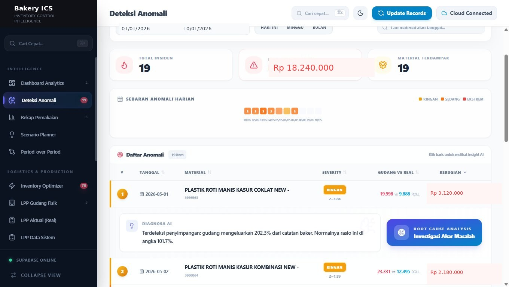

Inventory Control System
Period-end reconciliation took a full working day — five Excel files that never agreed. Period analysis ran 3–5 times a week, each taking a full working day. Now under 5 minutes. Real-time costing, anomaly detection, and reorder signals — used daily by the operations team.
Impact at a Glance
A Full Day of Analysis, Every Period
A large-scale bakery with hundreds of SKUs and dozens of raw materials — all data scattered across disconnected Excel files with no single source of truth.
- Stock, production, and COGS data in separate, disconnected Excel files
- For 1 period: collect all files → copy-paste → calculate manually → re-check — a full day of work
- COGS variance only discovered at month-end close — too late to correct
- Real-time stock? Open a separate Excel file — data may be hours old
- Procurement decisions: manual simulation in Excel, no statistical basis
- Production anomalies undetectable — data too fragmented to analyze
- Production work order file formats differ per operator — no standardization
- One centralized platform — single source of truth for all data
- Period analysis completed in minutes, not a full day
- COGS variance visible in real-time per transaction, not at month-end
- Live stock dashboard — no more opening stale Excel files
- Reorder Point calculated from actual historical consumption — statistical basis
- Anomalies flagged automatically via Z-score + 30-day heatmap timeline
- Bulk work order upload with automatic column normalization — any operator file format accepted without manual mapping
Anomaly Detection — In Use
Z-score anomaly panel with rule-based root cause analysis. Each row shows material, severity, usage ratio vs recipe baseline, and estimated cost discrepancy.

Live production UI · Screenshot uses dummy data
Core Modules
Two modules forming the data foundation — production work orders flow in, are normalized, and BOM-exploded automatically into per-material ledger entries that every downstream module reads from.
Production work order files (internally called SPK — Surat Perintah Kerja) are uploaded via drag-and-drop. The system normalizes Excel headers via a keyword synonym map — "PLU", "Kode", "PB" are all resolved to canonical column names automatically. Each batch is then BOM-exploded client-side and committed to Supabase: 847 rows → 3,204 ledger entries end-to-end including file parse, BOM lookup, and network round-trip. Each batch is immediately exploded against the active BOM, generating per-material ledger entries automatically.
Two cost tracks run in parallel: System COGS (BOM × master price) and Actual COGS (real transaction price from the ledger). Variances are shown per material and per period. Groq AI generates a one-paragraph executive narrative from the aggregated variance summary — only category-level totals and percentage deviations are sent to the API, not raw transaction data, supplier names, or unit prices. Management reads the narrative directly without interpreting tables.
Intelligence Modules
Three modules that transform raw ledger data into operational decisions — driven by statistics and projections, not manual intuition.
Each transaction is scored by comparing its gudang-vs-resep ratio to that material's own historical ratio baseline — not raw quantity. If a material consistently uses 130% of its recipe, that is its normal; Z-score ≈ 0. An anomaly fires only when today's ratio deviates from its own history. Threshold: ≥2σ = warning, ≥3.5σ = critical. Results are visualized two ways: a ranked severity table for per-material drill-down, and a 30-day SVG heatmap timeline showing anomaly distribution at a glance.
| Material | Z-Score | Status |
|---|---|---|
| Wheat Flour Cakra 25kg | 5.14σ | EXTREME |
| White Bread Packaging | 3.82σ | HIGH |
| Refined Sugar 50kg | 2.71σ | MED |
| Instant Yeast 500g | 1.43σ | NORMAL |
Safety Stock and Reorder Point calculated per material from actual historical consumption. Forecast blends two algorithms — Weighted Moving Average (WMA) and Simple Exponential Smoothing (SES) — so recent spikes and long-term trends are both captured. Service level is configurable (default 95%).
Safety Stock = Z × σ_demand × √(LT)
ROP = (smartForecast × LT) + Safety Stock
Z configurable · default 1.65 ≈ 95% SL
| Material | Stock | ROP | |
|---|---|---|---|
| Wheat Flour Cakra 25kg | 142 | 180 | ORDER |
| Refined Sugar 50kg | 38 | 42 | SOON |
| Butter Block 25kg | 91 | 60 | OK |
Two-dimensional what-if: material price slider (±30%) and usage variance slider (±20%). Every adjustment instantly re-projects end-of-month COGS — all calculations client-side, zero server delay.
Two primary use cases: supplier price negotiation and production efficiency planning.
How the Modules Connect
Each module shares a single Supabase ledger as its source of truth. Data flows in from SPK ingestion and branches out to four independent analytics engines — none of them re-import or copy data.
Key Engineering Details
Two patterns that show how the system handles complexity: a forecasting engine that blends two algorithms per material, and a rule-based RCA tree that explains anomalies without an AI API call. The Z-score runs on each material's usage ratio — not raw quantity — so habitual over-use doesn't generate false positives.
// Two forecasting algorithms run per material, then blended // WMA (recent-weighted) captures short-term spikes // SES (exponential smoothing) captures the long-run trend // 1. Weighted Moving Average — last 7 days, heavier on recent const wmaWeights = [1, 1, 1, 2, 2, 3, 4]; const wmaUsage = last7.reduce((sum, val, i) => sum + (val * wmaWeights[i]), 0) / totalWeight; // 2. Simple Exponential Smoothing — alpha=0.3 (more weight on history) let sesForecast = dailySeq[0] || 0; dailySeq.forEach(val => { sesForecast = (0.3 * val) + (0.7 * sesForecast); }); // 3. Blend: WMA dominates (spike detection), SES stabilises const smartForecast = (wmaUsage * 0.7) + (sesForecast * 0.3); // Safety stock uses std deviation over the full date range // serviceLevel = 1.65 (configurable slider, default 95%) const safetyStock = serviceLevel * stdDev * Math.sqrt(leadTime); const rop = (smartForecast * leadTime) + safetyStock;
// RCA runs entirely client-side — no Groq call per anomaly // Three deterministic checks in sequence; if none match → likely waste // Check 1: Did supplier price rise >5% vs 30-day average? const isPriceUp = avgPrice30 > 0 && currentPrice >= avgPrice30 * 1.05; // Check 2: Did production volume rise >15% vs 30-day average? const isVolumeUp = avgVolume30 > 0 && item.realQty >= avgVolume30 * 1.15; // Check 3: Any 4-digit PLU prefix not seen in prior 30 days? (new product) const newPrefixes = currentProdRefs .filter(p => !prevProdPrefixes.has(p.prefix)); const isNewProduct = newPrefixes.length > 0; // Verdict: if nothing explains it, flag as potential waste/leakage const isWaste = !isPriceUp && !isVolumeUp && !isNewProduct;